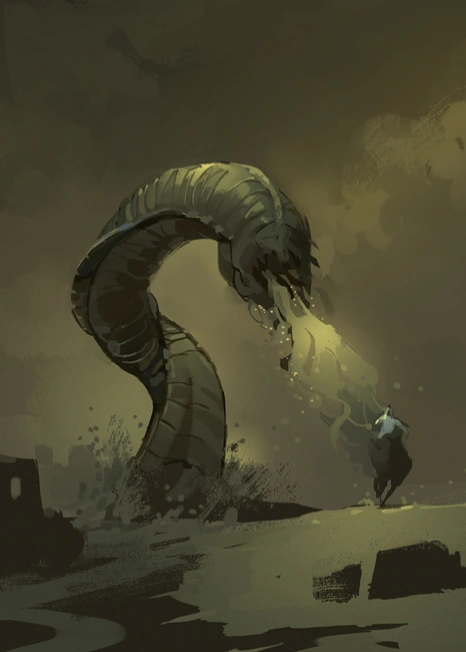
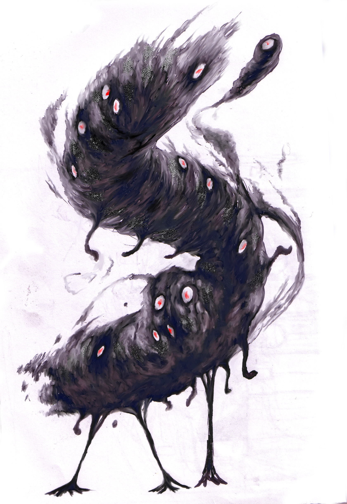
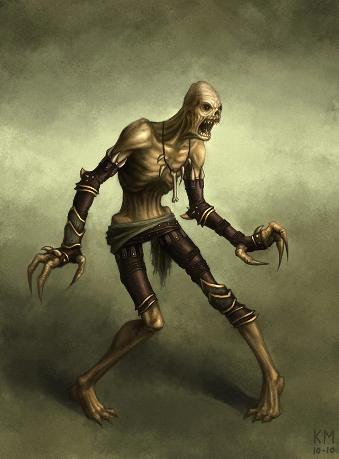
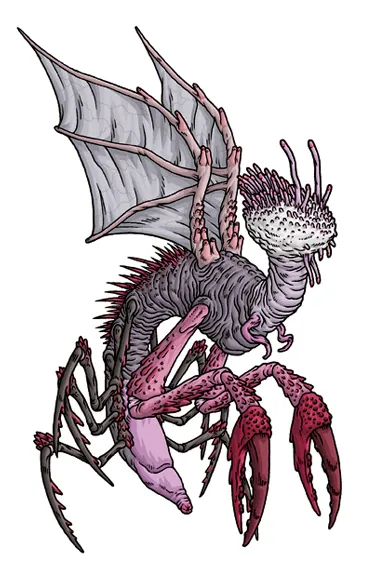
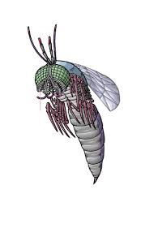
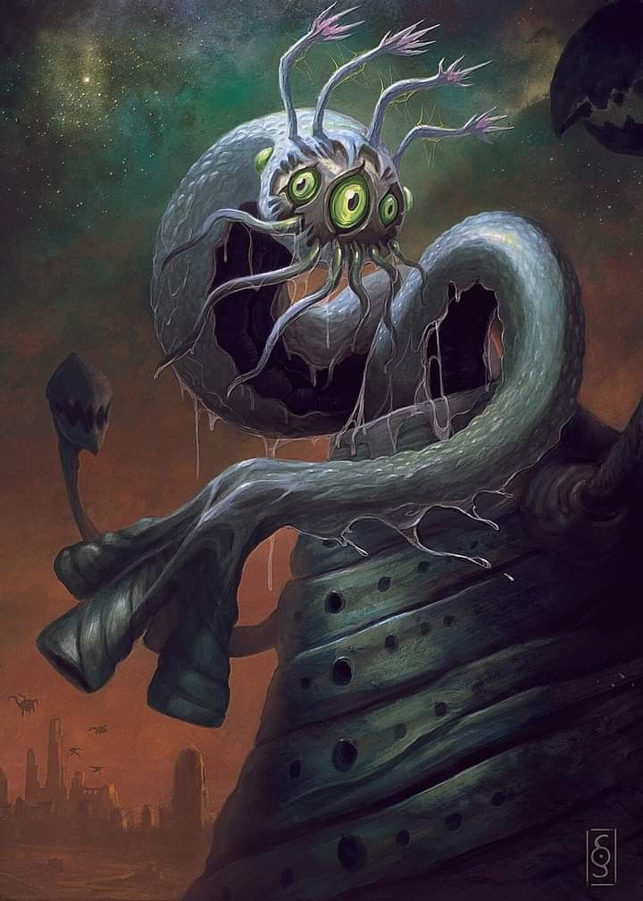
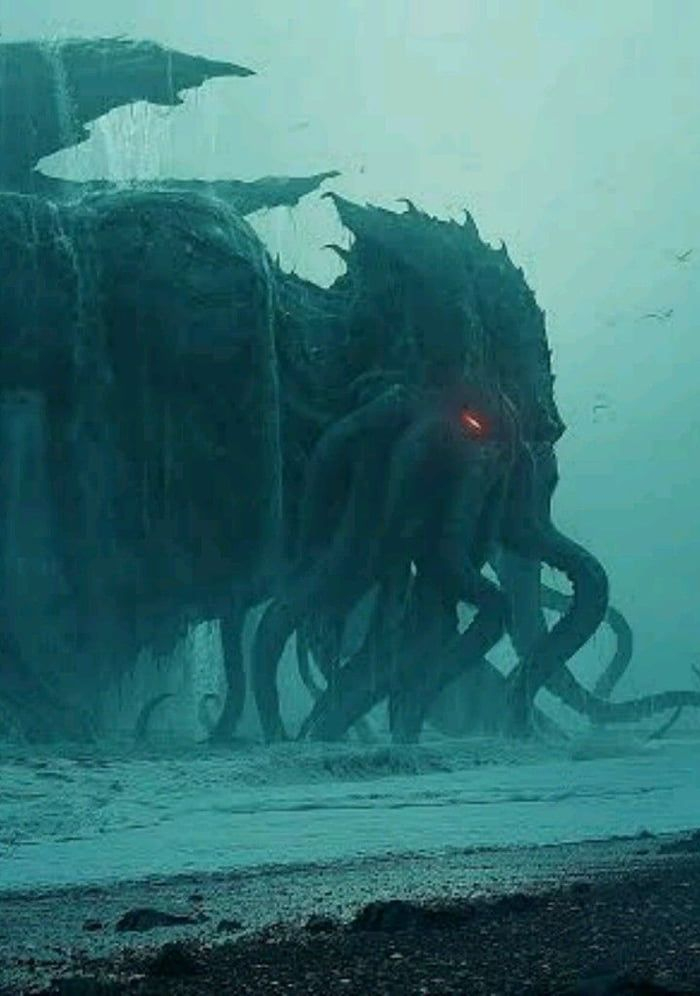
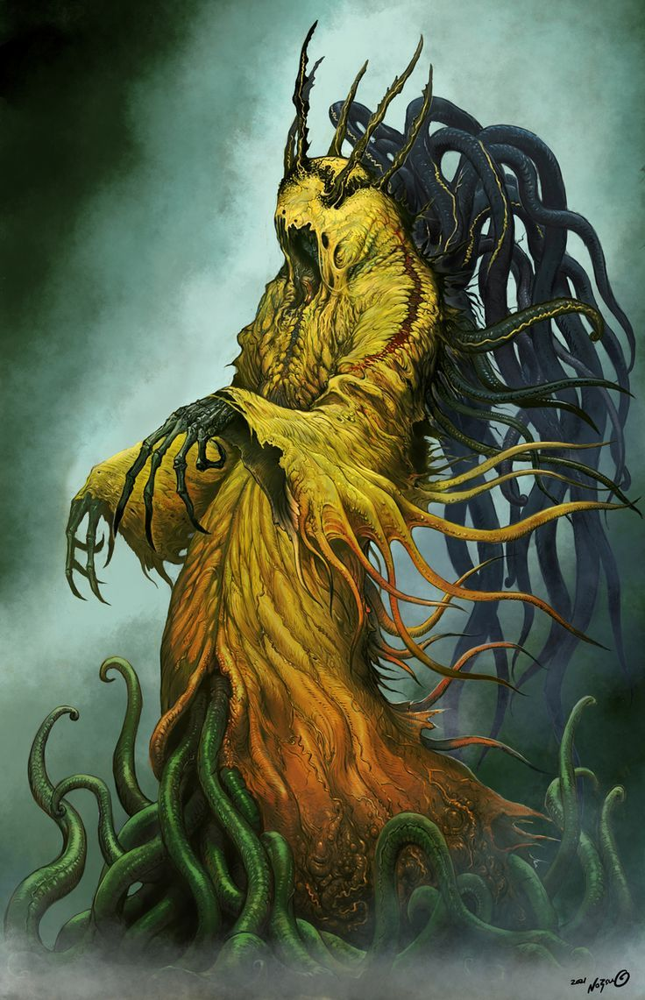

Independent/Servitor Races

Dhole

Flying Ployps

Ghoul

Mi-Go

Shaggai

Yith
Great Old One

Cthulhu

Hastur
Out Gods
Dhole
Dhole are giant, fleshworm-like creatures that dig holes in the ground and live inside them; they are not native to Earth and appear to have been brought here for only a very short period of time. Therefore, Earth was fortunate not to be devoured by the holes they dug, as other worlds were. Although there is no substantial harm done to the worms, they still do not like light. They are rarely seen during the day, except on those worlds they have completely conquered.
Flying Ployps
Although we call them Flying Ployps, no one knows their true name; this race came to Earth from outer space
as conquerors 750 million years ago. They built basalt cities with tall, windowless towers and simultaneously
inhabited three other worlds in the solar system. On Earth, the Great Race of Yith waged war against them and
successfully forced them to retreat underground, but at the end of the Cretaceous period (about 50 million
years ago), the Flying Polyps swarmed out of their underground world and renewed the war with the Great Race,
eventually exterminating them.
At present, the ployps still live in their caves, seeming to be content with the status quo, and are only
satisfied with destroying those creatures that accidentally intrude. The entrances to their settlements are mostly
buried deep in ancient ruins; these passages are huge wells, covered and sealed with huge stones. Deep in the well
live the remaining flying hydras - a group of bizarre, cruel and ruthless warmongers with many amazing means of attack.
Ghoul
A ghoul is a humanoid monster with elastic, rubber-like skin. They have hoof-like feet, dog-like faces with
pointy claws, and speak in a rapid, weeping voice. Because they often forage in graves, their bodies are
mostly covered with fungi that grow in graves.
Lovecraft's ghouls are terrifying creatures that live in a network of underground tunnels in cities; they
make pacts with witches and sometimes attack humans.
Mi-Go
These fungi from the planet Yuggoth are an interstellar race. Their main colony or base is on Yuggoth (possibly Pluto). They have established mining colonies in many mountain ranges across the planet in search of some rare minerals. Mi-Go are clearly not animals; instead, they are closely related to fungi. They can communicate with each other by changing the color of the brain-like bumps on their heads, but can also make an insect-like buzzing sound to simulate human language.
Shaggai
The Shaggai are a half-human, half-Shan hybrid race. They hatch like humans from a maggot-like egg and continue to grow like humans until they reach puberty, at which point they metamorphose into giant humanoid insectoid creatures. After transforming into Shaggai, their size is no different from that of adolescent humans. Their eyes became compound eyes, they lost their noses and ears, and their lips and teeth became a short beak with a long sucking tongue. Xia Gai's multi-sectioned limbs are hard, his fluorescent skin is as hard as an insect's, and he has huge hard wings growing on his back.
The Great Race of Yith
The "Great Race of Yith" comes from a destroyed world called Yith. This race has no entity, but has the ability
to exchange spirits with consciousnesses in different time and space. They are accustomed to using this ability
to transfer collectively to the body of a certain race in a certain time and space. When the race is about to die,
they change hosts to escape the fate of extinction. They came to Earth hundreds of millions of years ago, living
in the bodies of Earth's native races and sealing off their natural enemies, the "Flying polyps," which fed on them.
After about 200 million years of prosperity, the Blind Ones escaped from the seal about 50 million years ago and
destroyed their civilization, but before that, they had predicted this with future knowledge and moved to the Earth
after the extinction of mankind, parasitizing on the ruling race at that time, a certain strong crustacean (the Coleopterous).
When the Earth was about to be destroyed, they moved again to a bulbous plant on Mercury.
The Great Cthulhu
The form of the great Cthulhu is not fixed. He can change his body structure at will: create new limbs and restore
Retract old limbs; extend wingspan and shrink body size to greatly improve its ability to fly in the air, or lengthen
arms and tentacles to explore narrow tunnels. But no matter how it changes, its specific shape is similar to the
description above and can be immediately recognized as Cthulhu; even if he can stretch the size of his wings at will,
he cannot completely absorb it.
Cthulhu lives in the dark and silent city of R'lyeh, which is sunk deep in the Pacific Ocean. There, he lies in a state
of dormancy, neither alive nor dead. But one day, this underwater city will rise to the surface of the sea, and then
Cthulhu will wake up and will devour and slaughter all living things on the earth without restraint. Other members of
the Cthulhu clan are also buried in R'lyye, and Cthulhu is obviously their ruler and high priest, and the most powerful of them all.
Hastur the Unspeakable
Hastur the Unspeakable lives near Betelgeux in the constellation Taurus and is definitely associated with the mysterious Lake Halki, the Yellow Seal, and Carcosa and its inhabitants. He may also be associated with the ability to fly in space. His appearance is a topic of constant debate: the corpses possessed by Hastur become bloated and scaly, and their limbs are as soft as if the bones were removed; the monster in Lake Hari looks like an octopus from behind. However, they all have unimaginably horrific faces, which is the only thing they have in common. Its specific appearance can be determined by the keeper. Hastur is served by the Byaki, a tribe that can fly freely in the stars.
Nyarlathotep
Nyarlathotep differs from the other deities in the Mythos in a number of ways. Most of the Outer Gods are exiled to the stars,
like Yog-Sothoth and Azathoth, and most of the Great Old Ones are sleeping and dreaming like Cthulhu; Nyarlathotep, however,
is active and frequently walks the Earth in the guise of a human being, usually a tall, slim, joyous man. He has "a thousand"
other forms and manifestations, many reputed to be quite horrific and sanity-blasting.
Most of the Outer Gods have their own cults serving them; Nyarlathotep seems to serve several cults and takes care of their
affairs in the other Outer Gods' absence. Most Outer Gods use strange alien languages, while Nyarlathotep uses human languages
and can easily pass for a human being if he chooses to do so. Finally, most of them are all-powerful yet evidently without
clear purpose or agenda, yet Nyarlathotep seems to be deliberately deceptive and manipulative, and even uses propaganda to
achieve his goals. In this regard, he is probably the most human-like among the Outer Gods.
Nyarlathotep enacts the will of the Outer Gods, and is their "messenger, heart and soul", "the immemorial figure of the
deputy or messenger of hidden and terrible powers"